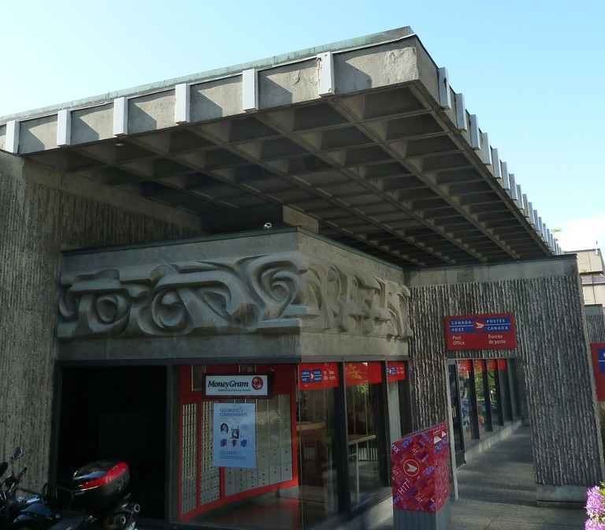
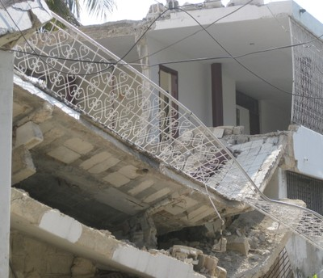

Cast-in-place beamless reinforced concrete floor [FC1]
Reinforced concrete slabs are supported by columns or load-bearing walls. Flat slabs are supported by columns with capitals and/or drop panels, while flat plates are supported by columns without capitals. This floor system also includes waffle slabs without beams. Slabs or plates can be post-tensioned.

Waffle slab concrete construction, post office building, Canada (S. Brzev)

Flat plate concrete construction, parking garage, USA (S. Brzev)

Reinforced concrete flat slab system with capitals, UK (S. Brzev)


Floor slab system consisting of cast-in-place reinforced concrete voided with concrete blocks was observed in Haiti after the 2010 earthquake (top photo - A. Irfanoglu and bottom photo - A. Lang)